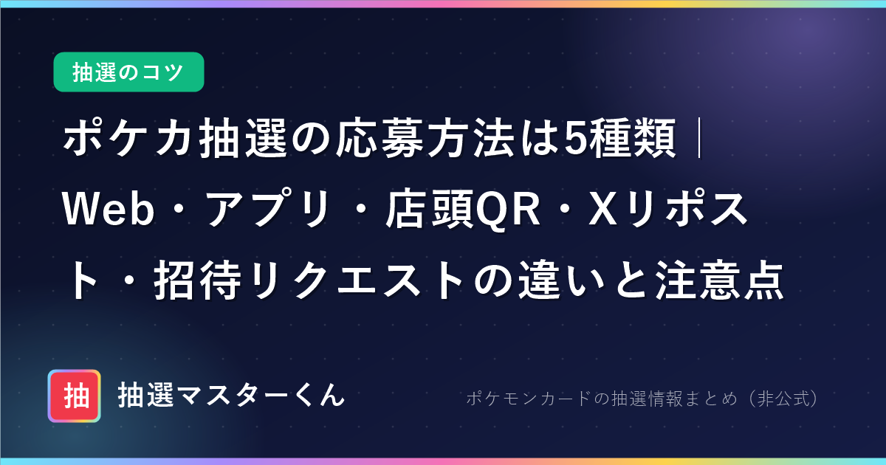

ポケカ抽選の応募方法は5種類｜Web・アプリ・店頭QR・Xリポスト・招待リクエストの違いと注意点

ポケカの抽選は、店舗によって応募のしかたが大きく違います。当サイトでは抽選を5つの方法に分けて掲載しています。それぞれの特徴と、気をつけたい点を紹介します。
1. Web（応募フォーム）
一番多いタイプです。店舗のサイトや、Googleフォーム、LivePocketなどの外部サービスから応募します。
- 例：楽天ブックス、駿河屋、晴れる屋2（LivePocket）、TCGショップ193（Googleフォーム）など
- 注意：店舗の会員登録が条件のことが多く、会員番号の入力を求められる場合もあります。フォームのURLが本物か、店舗の公式サイトや公式Xから開いて確かめましょう
2. アプリ
店舗の公式アプリから応募するタイプです。家電量販店や大手チェーンに多く見られます。
- 例：しまむら（しまむらアプリ）、コジマ（コジマアプリ）、古本市場（ふるいちポイントアプリ）など
- 注意：応募チケット（しまむらは5枚）や、一定期間の購入実績（コジマは5,000円以上）が必要なことがあります。アプリを入れたその日には応募できないこともあるので、早めの準備が大切です
3. 店頭（QRコード）
店舗に貼られたQRコードを読み取って応募するタイプです。
- 例：ホビーオフの一部店舗など
- 注意：お店に行かないと応募できず、当選後の受け取りもその店舗になります。家や職場の近くの店舗を選びましょう
4. X（フォロー＆リポスト）
店舗のXアカウントをフォローし、指定の投稿をリポストして応募するタイプです。
- 例：カードラボの一部店舗、駿河屋（Web応募とあわせて実施）など
- 注意：店舗の公式アカウントか必ず確認してください。公式をまねた偽アカウントがDMで個人情報を聞き出す手口もあります。当選の連絡がDMで来たら、公式アカウントからの連絡かよく確かめましょう
5. 招待リクエスト
購入の「招待」をリクエストし、選ばれた人だけが購入できるしくみです。
- 例：Amazon、ノジマオンラインなど
- 注意：締切が公表されないことが多く、いつ結果が出るかわかりません。招待が届いたら購入期限が短いこともあるので、メールはこまめに確認しましょう
応募方法で絞り込んで探す
当サイトの抽選一覧では、応募方法ごとに絞り込めます。「アプリは入れていないからWebだけ見たい」といった探し方ができるので、ぜひ使ってみてください。
応募前のチェックポイントはこちらの記事にまとめています。
当サイトは非公式のファンサイトです。価格・日程などは記事公開時点の情報なので、最新の情報は公式サイトや各販売店でご確認ください。